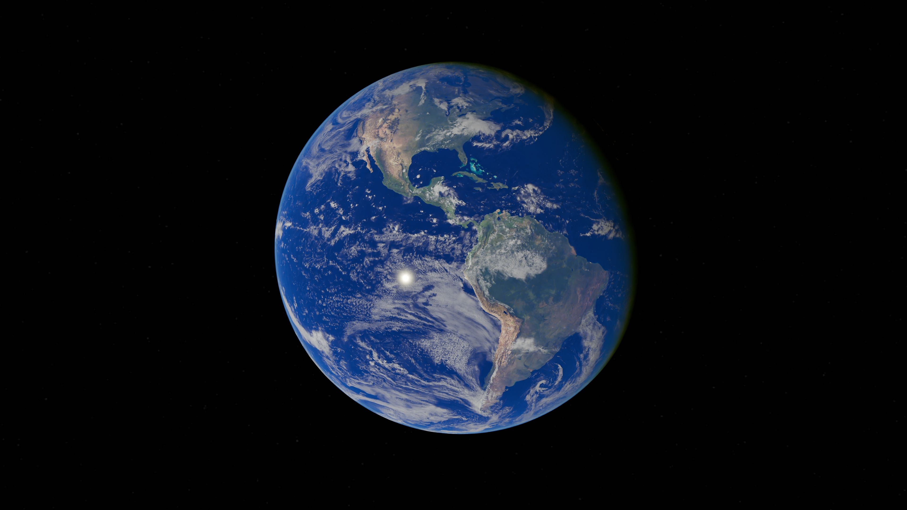

La Terre
La Terre, notre planète bleue
Troisième planète à partir du Soleil, la Terre est notre maison dans l’espace. Elle possède une surface rocheuse, une atmosphère et de vastes océans. C’est la seule planète sur laquelle nous connaissons actuellement l’existence de la vie.

Pourquoi l’appelle-t-on la planète bleue ?
Les océans couvrent environ 71 % de la surface terrestre. Depuis l’espace, cette eau donne à notre planète une grande partie de sa couleur bleue. Les continents et les nuages complètent ce paysage. L’eau existe sur Terre sous forme liquide, sous forme de glace et sous forme de vapeur dans l’atmosphère.
Une atmosphère qui nous entoure
L’atmosphère est l’enveloppe de gaz qui entoure la Terre. Elle contient principalement de l’azote et de l’oxygène. Elle contribue à réguler les températures et nous protège d’une partie des rayonnements du Soleil.
La Lune, notre satellite naturel
La Terre possède un satellite naturel permanent : la Lune. Un satellite naturel est un astre qui tourne autour d’un autre astre. La Lune joue notamment un rôle dans les marées.
Caractéristiques de la planète
| Information | Valeur | Description |
|---|---|---|
| Composition de l’atmosphère | 78 % d’azote, 21 % d’oxygène | Le 1 % restant est principalement composé d’argon, de dioxyde de carbone et de vapeur d’eau. |
| Diamètre | 12 742 km | Diamètre moyen de la planète. |
| Gravité | 9,81 m/s² | Accélération moyenne exercée par la Terre sur les objets à sa surface. |
| Distance moyenne au Soleil | 149,6 millions de km | Cette distance correspond à une unité astronomique. |
| Durée d’une rotation | 23 h 56 min | Temps nécessaire pour effectuer un tour complet sur son axe. |
| Durée d’une révolution | 365,25 jours | Temps nécessaire pour faire le tour du Soleil. |
| Satellites naturels | 1 | La Lune est le seul satellite naturel de la Terre. |
| Température moyenne | Environ 15 °C | Moyenne globale à la surface de la planète. |
| Source : NASA | ||
Pour aller plus loin en vidéo
Voici une vidéo du décollage d’Ariane 5 lors du vol VA226, qui a transporté des satellites pour l’observation de la Terre.
Poursuivre la découverte
D’autres informations sur la Terre sont disponibles sur le site de la NASA, en anglais. Visiter le site de la NASA (nouvelle fenêtre)